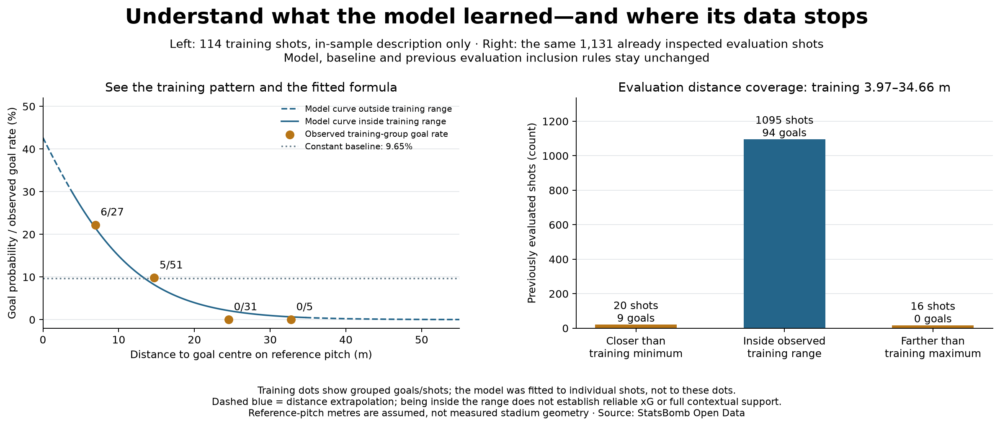

Football analyst training · Project lesson 28
See why the estimate changes with distance.
Our baseline gives every shot 9.65%. The distance model uses a learned formula. This lesson shows the training pattern behind that formula, then checks where its examples stop.
1. Look at real training counts
- Below 10 m: 6 goals from 27 shots, about 22%.
- 10–<20 m: 5 from 51, about 10%.
- 20–<30 m: 0 from 31.
- 30 m and beyond: 0 from 5.
The computer fitted a smooth relationship from all individual shots. It did not simply copy these group percentages. No goals in a small distant-shot group does not mean scoring there is impossible.

2. Read actual model outputs
The frozen formula estimates about 14.9% at 10 m, 4.0% at 20 m and 1.0% at 30 m. These are actual outputs, not illustrative guesses. The 0–10 m group's average rate is different from the prediction at exactly 10 m.
Distances use an assumed reference pitch, not actual venue measurements. The left plot describes training fit; it is not another independent test.
3. Check where the examples stop
The nearest training shot was about 3.97 m from goal centre, and the farthest about 34.66 m. Of the same 1,131 evaluation shots, 20 were closer and 16 were farther. Predicting outside this distance range is called extrapolation. The dashed blue curve shows that extension.
All evaluation shots stay included. We did not remove difficult shots or change the model after seeing their outcomes.
4. Inspect and explain
Open 28_training_distance_support.py in Spyder. distance_band creates descriptive training groups; range_category checks each evaluation distance against the full-precision training minimum and maximum. Neither function fits a model.
A coach asks for a confident xG estimate for a shot 2 m from goal. Write a response using the training-range information and one remaining model limitation.
Check your reasoning
“The model can produce an estimate at 2 m, but that distance is closer than every shot used to fit it. I would flag it as extrapolation and seek more representative close-shot evidence; the current model also omits body part, pressure and defensive context.” Do not say the estimate must be wrong or that inside-range estimates are automatically correct.
Ask your teacher to review your explanation or clarify any code line. This implementation was prepared with assistance; independent interpretation remains a separate milestone.
Previous: fixed-model evaluation · Model reference · Full support audit